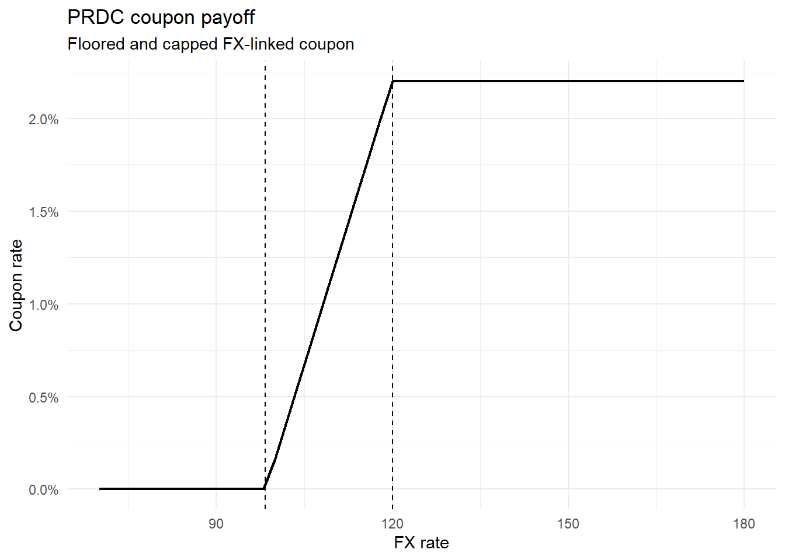
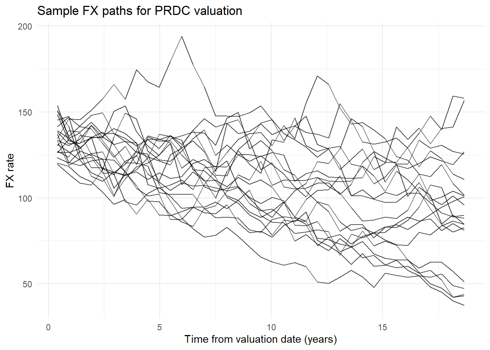
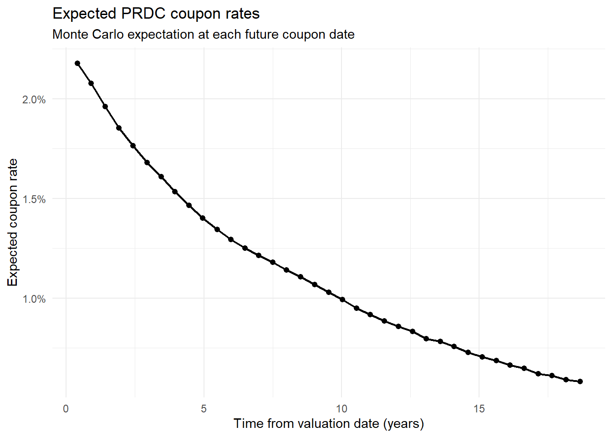
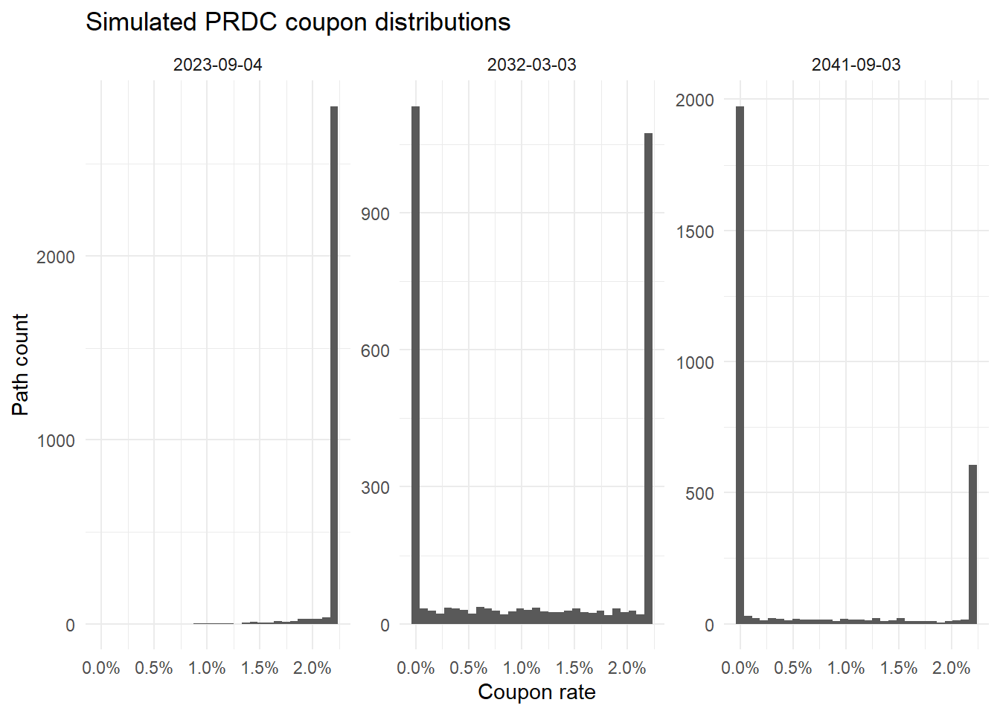
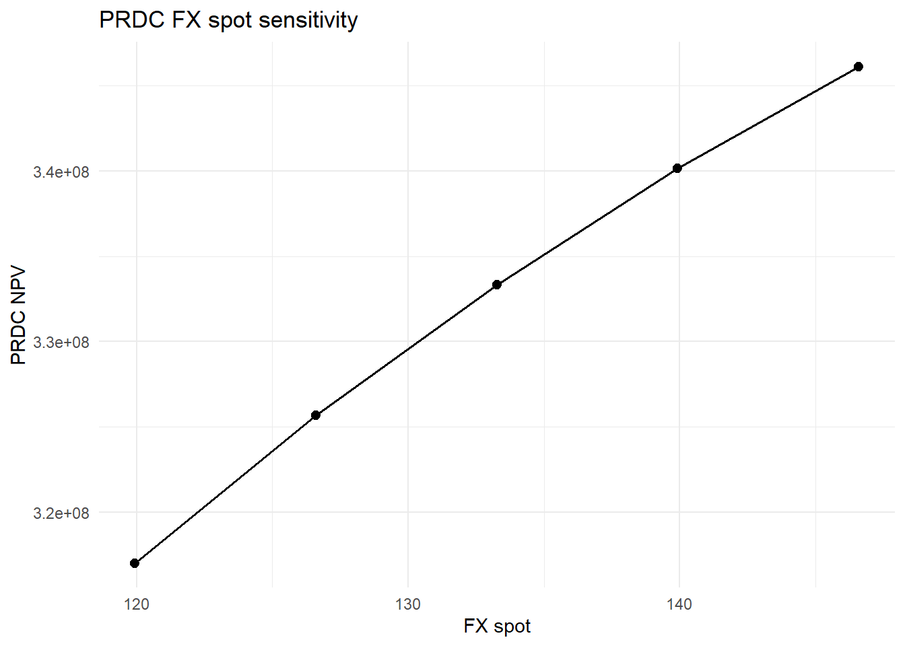
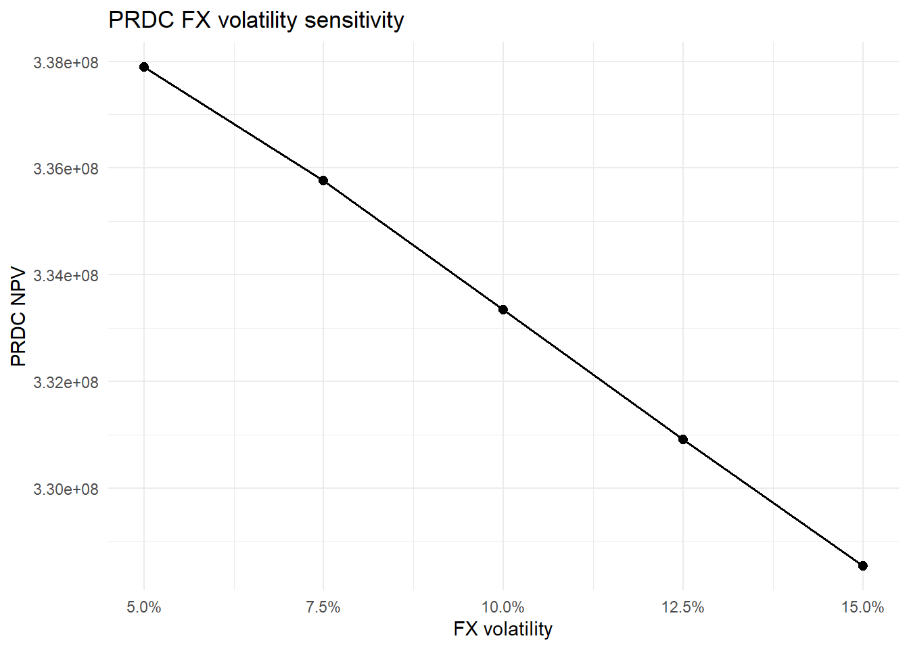

knitr::opts_chunk$set(
collapse = TRUE,
comment = "#>",
warning = FALSE,
message = FALSE
)
suppressPackageStartupMessages({
library(tidyverse)
library(ggthemes)
library(QuantLib)
library(GaussQuant)
library(tidyverse)
library(broom)
})第II-9章 エキゾチック・デリバティブとPRDC
FX連動CouponとMonte Carlo評価
17 第II-9章 エキゾチック・デリバティブとPRDC
これまでの章では、債券、金利先物、Swap、Option、Callable BondおよびCDSを、それぞれの主要なリスク要因に基づいて評価した。本章では、第II部の締めくくりとして、金利と為替を組み合わせたエキゾチック・デリバティブであるPRDCを検討する。
PRDC（Power Reverse Dual Currency Note）は、為替レートに連動するCouponを支払う長期の仕組債である。典型的なCoupon rateは、次の形で表される。
\[ C(S_t) = \min \left[ C_{\max}, \max \left( a\frac{S_t}{S_0}-b, C_{\min} \right) \right] \]
ここで、
\(S_t\) はCoupon決定日における為替レート
\(S_0\) はCoupon計算上の基準為替レート
\(a\) は為替連動係数
\(b\) は固定控除率
\(C_{\min}\) はCoupon Floor
\(C_{\max}\) はCoupon Cap
である。
為替レートが上昇するとCoupon rateは増加するが、FloorとCapによって下限と上限が制限される。したがって、PRDC CouponはFX Spotに対して区分線形である一方、将来価値は為替分布に依存する非線形商品となる。
本章では、Domestic金利、Foreign金利およびFX volatilityを一定とするGarman–Kohlhagenモデルを用いて、将来のCoupon日ごとにFXパスを生成する。各パスでCouponを計算し、その平均値からCoupon LegとRedemption Legの現在価値を求める。
実際のPRDCには、発行体の期限前償還権を含むことが多い。本章では商品の基本構造を明確にするため、発行体コール権を含まない非Callable PRDCを評価する。Callable PRDCには、金利・為替の複数因子モデル、相関構造およびLeast-Squares Monte Carloなどが追加で必要となる。
17.1 1. 商品条件
2015年9月3日から2041年9月3日まで、半年ごとにCouponを支払うPRDCを考える。最初の1年間は固定Couponとし、その後はFX連動Couponへ移行する。
評価日は2023年4月11日であるため、固定Intro Coupon期間はすでに終了している。ただし、GaussQuantのPRDC評価関数がIntro Couponを扱えることを確認するため、契約条件として残す。
本章では、計算時間を抑えながらMonte Carlo評価を確認するため、基準評価のパス数を3,000本、感応度評価を1,000本とする。
valuation_date_prdc <- as.Date("2023-04-11")
effective_date_prdc <- as.Date("2015-09-03")
termination_date_prdc <- as.Date("2041-09-03")
intro_coupon_end_date_prdc <- as.Date("2016-09-03")
notional_prdc <- 300000000
intro_coupon_rate_prdc <- 0.022
coupon_frequency_months_prdc <- 6L
domestic_rate_prdc <- 0.01
foreign_rate_prdc <- 0.03
discount_rate_prdc <- 0.005
fx_spot_prdc <- 133.2681
fx_volatility_prdc <- 0.10
coupon_fx_base_prdc <- 120
coupon_leverage_prdc <- 0.122
coupon_subtraction_prdc <- 0.10
coupon_floor_prdc <- 0
coupon_cap_prdc <- 0.022
number_of_paths_prdc <- 3000L
sensitivity_paths_prdc <- 1000L
random_seed_prdc <- 123L
GaussQuant::set_eval_date_GQL(
valuation_date_prdc
)
prdc_input_tbl <- tibble::tribble(
~input, ~value,
"valuation_date", as.character(valuation_date_prdc),
"effective_date", as.character(effective_date_prdc),
"termination_date", as.character(termination_date_prdc),
"intro_coupon_end_date", as.character(intro_coupon_end_date_prdc),
"notional_jpy", as.character(notional_prdc),
"intro_coupon_rate", as.character(intro_coupon_rate_prdc),
"coupon_frequency_months", as.character(coupon_frequency_months_prdc),
"domestic_rate", as.character(domestic_rate_prdc),
"foreign_rate", as.character(foreign_rate_prdc),
"discount_rate", as.character(discount_rate_prdc),
"fx_spot", as.character(fx_spot_prdc),
"fx_volatility", as.character(fx_volatility_prdc),
"coupon_fx_base", as.character(coupon_fx_base_prdc),
"coupon_leverage", as.character(coupon_leverage_prdc),
"coupon_subtraction", as.character(coupon_subtraction_prdc),
"coupon_floor", as.character(coupon_floor_prdc),
"coupon_cap", as.character(coupon_cap_prdc),
"valuation_paths", as.character(number_of_paths_prdc),
"sensitivity_paths", as.character(sensitivity_paths_prdc),
"random_seed", as.character(random_seed_prdc)
)
GaussQuant::show_tbl_GQH(
prdc_input_tbl,
"PRDC product and model assumptions",
n = 30
)
#> # A tibble: 20 × 2
#> input value
#> <chr> <chr>
#> 1 valuation_date 2023-04-11
#> 2 effective_date 2015-09-03
#> 3 termination_date 2041-09-03
#> 4 intro_coupon_end_date 2016-09-03
#> 5 notional_jpy 3e+08
#> 6 intro_coupon_rate 0.022
#> 7 coupon_frequency_months 6
#> 8 domestic_rate 0.01
#> 9 foreign_rate 0.03
#> 10 discount_rate 0.005
#> 11 fx_spot 133.2681
#> 12 fx_volatility 0.1
#> 13 coupon_fx_base 120
#> 14 coupon_leverage 0.122
#> 15 coupon_subtraction 0.1
#> 16 coupon_floor 0
#> 17 coupon_cap 0.022
#> 18 valuation_paths 3000
#> 19 sensitivity_paths 1000
#> 20 random_seed 12317.2 2. Coupon Schedule
契約開始日から満期までの全Coupon Scheduleと、固定Intro Coupon期間のScheduleを作成する。
valuation_date_ql_prdc <- GaussQuant::date_GQL(
valuation_date_prdc
)
effective_date_ql_prdc <- GaussQuant::date_GQL(
effective_date_prdc
)
termination_date_ql_prdc <- GaussQuant::date_GQL(
termination_date_prdc
)
intro_coupon_end_date_ql_prdc <- GaussQuant::date_GQL(
intro_coupon_end_date_prdc
)
coupon_schedule_prdc <- QuantLib::Schedule(
effective_date_ql_prdc,
termination_date_ql_prdc,
GaussQuant::period_months_GQL(
coupon_frequency_months_prdc
),
QuantLib::TARGET(),
"ModifiedFollowing",
"ModifiedFollowing",
"Backward",
FALSE
)
intro_coupon_schedule_prdc <- QuantLib::Schedule(
effective_date_ql_prdc,
intro_coupon_end_date_ql_prdc,
GaussQuant::period_months_GQL(
coupon_frequency_months_prdc
),
QuantLib::TARGET(),
"ModifiedFollowing",
"ModifiedFollowing",
"Backward",
FALSE
)
coupon_schedule_tbl <- GaussQuant::schedule_table_GQL(
coupon_schedule_prdc
)
intro_coupon_dates_prdc <- GaussQuant::schedule_date_vector_GQL(
intro_coupon_schedule_prdc
)
remaining_intro_coupon_dates_prdc <- intro_coupon_dates_prdc[
intro_coupon_dates_prdc >
valuation_date_prdc
]
intro_coupon_status_tbl <- tibble::tribble(
~metric, ~value,
"intro_coupon_rate", intro_coupon_rate_prdc,
"total_intro_schedule_dates", length(intro_coupon_dates_prdc),
"remaining_intro_coupon_dates", length(remaining_intro_coupon_dates_prdc),
"has_remaining_intro_coupon", as.numeric(
length(
remaining_intro_coupon_dates_prdc
) > 0
)
)
GaussQuant::show_tbl_GQH(
coupon_schedule_tbl,
"PRDC full coupon schedule",
n = 60
)
#> # A tibble: 53 × 2
#> period schedule_date
#> <int> <date>
#> 1 1 2015-09-03
#> 2 2 2016-03-03
#> 3 3 2016-09-05
#> 4 4 2017-03-03
#> 5 5 2017-09-04
#> 6 6 2018-03-05
#> 7 7 2018-09-03
#> 8 8 2019-03-04
#> 9 9 2019-09-03
#> 10 10 2020-03-03
#> # ℹ 43 more rows
GaussQuant::show_tbl_GQH(
intro_coupon_status_tbl,
"PRDC introductory coupon status",
n = 20
)
#> # A tibble: 4 × 2
#> metric value
#> <chr> <dbl>
#> 1 intro_coupon_rate 0.022
#> 2 total_intro_schedule_dates 3
#> 3 remaining_intro_coupon_dates 0
#> 4 has_remaining_intro_coupon 017.3 3. Domestic、ForeignおよびDiscount Curve
FX Quoteを、外国通貨1単位当たりの円貨額として表す。
\[ S_t = \text{JPY per unit of foreign currency} \]
このとき、
- Domestic CurveはJPY金利
- Foreign Curveは外国通貨金利
である。
Garman–Kohlhagenモデルのリスク中立ドリフトには、Domestic金利とForeign金利の差を使用する。
\[ \frac{dS_t}{S_t} = (r_d-r_f)dt + \sigma_{\mathrm{FX}}dW_t \]
本例では、Domestic金利を1%、Foreign金利を3%とする。そのため、リスク中立測度の下でのFXドリフトは年率マイナス2%となる。
Couponと元本の現在価値には、担保またはファンディング条件を表す外生的な割引率0.5%を使用する。これは簡略化した設定であり、本格的な評価ではDomestic OIS CurveとCollateral条件を整合させる必要がある。
fx_day_counter_prdc <- QuantLib::Actual360()
domestic_curve_prdc <- GaussQuant::flat_curve_GQL(
reference_date = valuation_date_ql_prdc,
rate = domestic_rate_prdc,
day_counter = fx_day_counter_prdc,
compounding = "Continuous"
)
foreign_curve_prdc <- GaussQuant::flat_curve_GQL(
reference_date = valuation_date_ql_prdc,
rate = foreign_rate_prdc,
day_counter = fx_day_counter_prdc,
compounding = "Continuous"
)
discount_curve_prdc <- GaussQuant::flat_curve_GQL(
reference_date = valuation_date_ql_prdc,
rate = discount_rate_prdc,
day_counter = fx_day_counter_prdc,
compounding = "Continuous"
)
domestic_curve_handle_prdc <- QuantLib::YieldTermStructureHandle(
domestic_curve_prdc
)
foreign_curve_handle_prdc <- QuantLib::YieldTermStructureHandle(
foreign_curve_prdc
)
discount_curve_handle_prdc <- QuantLib::YieldTermStructureHandle(
discount_curve_prdc
)
curve_summary_tbl <- tibble::tribble(
~curve, ~flat_rate,
"Domestic FX curve", domestic_rate_prdc,
"Foreign FX curve", foreign_rate_prdc,
"PRDC discount curve", discount_rate_prdc,
"FX risk-neutral drift", domestic_rate_prdc -
foreign_rate_prdc
)
GaussQuant::show_tbl_GQH(
curve_summary_tbl,
"PRDC flat-curve assumptions",
n = 20
)
#> # A tibble: 4 × 2
#> curve flat_rate
#> <chr> <dbl>
#> 1 Domestic FX curve 0.01
#> 2 Foreign FX curve 0.03
#> 3 PRDC discount curve 0.005
#> 4 FX risk-neutral drift -0.0217.4 4. FX Process
FX volatilityを10%とし、Garman–Kohlhagen Processを作成する。
fx_volatility_curve_prdc <- QuantLib::BlackConstantVol(
valuation_date_ql_prdc,
QuantLib::NullCalendar(),
GaussQuant::quote_handle_GQL(
fx_volatility_prdc
),
fx_day_counter_prdc
)
fx_volatility_handle_prdc <- QuantLib::BlackVolTermStructureHandle(
fx_volatility_curve_prdc
)
fx_process_prdc <- GaussQuant::fx_process_GQL(
spot = fx_spot_prdc,
foreign_curve_handle = foreign_curve_handle_prdc,
domestic_curve_handle = domestic_curve_handle_prdc,
volatility_handle = fx_volatility_handle_prdc
)
fx_market_summary_tbl <- tibble::tribble(
~metric, ~value,
"fx_spot", fx_spot_prdc,
"fx_volatility", fx_volatility_prdc,
"domestic_rate", domestic_rate_prdc,
"foreign_rate", foreign_rate_prdc,
"risk_neutral_drift", domestic_rate_prdc -
foreign_rate_prdc
)
GaussQuant::show_tbl_GQH(
fx_market_summary_tbl,
"PRDC FX market assumptions",
n = 20
)
#> # A tibble: 5 × 2
#> metric value
#> <chr> <dbl>
#> 1 fx_spot 133.
#> 2 fx_volatility 0.1
#> 3 domestic_rate 0.01
#> 4 foreign_rate 0.03
#> 5 risk_neutral_drift -0.0217.5 5. Coupon Payoff
本例のFX連動Couponは次式である。
\[ C(S) = \min \left[ 2.2\%, \max \left( 12.2\% \frac{S}{120} - 10\%, 0 \right) \right] \]
Floorに到達するFX水準は、
\[ S_{\mathrm{floor}} = S_0 \frac{ b+C_{\min} }{ a } \]
Capに到達するFX水準は、
\[ S_{\mathrm{cap}} = S_0 \frac{ b+C_{\max} }{ a } \]
である。
fx_floor_threshold_prdc <- coupon_fx_base_prdc *
(
coupon_subtraction_prdc +
coupon_floor_prdc
) /
coupon_leverage_prdc
fx_cap_threshold_prdc <- coupon_fx_base_prdc *
(
coupon_subtraction_prdc +
coupon_cap_prdc
) /
coupon_leverage_prdc
fx_payoff_grid_tbl <- tibble::tibble(
fx_rate = seq(
70,
180,
by = 2
)
) |>
dplyr::mutate(
uncapped_coupon = coupon_leverage_prdc *
.data$fx_rate /
coupon_fx_base_prdc -
coupon_subtraction_prdc,
coupon_rate = GaussQuant::prdc_coupon_GQL(
fx_rate = .data$fx_rate,
fx_base = coupon_fx_base_prdc,
leverage = coupon_leverage_prdc,
subtraction = coupon_subtraction_prdc,
floor_rate = coupon_floor_prdc,
cap_rate = coupon_cap_prdc
)
)
coupon_threshold_tbl <- tibble::tribble(
~threshold, ~fx_rate,
"floor_threshold", fx_floor_threshold_prdc,
"cap_threshold", fx_cap_threshold_prdc,
"current_spot", fx_spot_prdc
)
prdc_payoff_plot <- ggplot2::ggplot(
fx_payoff_grid_tbl,
ggplot2::aes(
x = .data$fx_rate,
y = .data$coupon_rate
)
) +
ggplot2::geom_line(
linewidth = 0.8
) +
ggplot2::geom_vline(
xintercept = c(
fx_floor_threshold_prdc,
fx_cap_threshold_prdc
),
linetype = "dashed"
) +
ggplot2::scale_y_continuous(
labels = scales::percent_format(
accuracy = 0.1
)
) +
ggplot2::labs(
title = "PRDC coupon payoff",
subtitle = "Floored and capped FX-linked coupon",
x = "FX rate",
y = "Coupon rate"
) +
ggplot2::theme_minimal()
GaussQuant::show_tbl_GQH(
coupon_threshold_tbl,
"PRDC coupon FX thresholds",
n = 20
)
#> # A tibble: 3 × 2
#> threshold fx_rate
#> <chr> <dbl>
#> 1 floor_threshold 98.4
#> 2 cap_threshold 120
#> 3 current_spot 133.
GaussQuant::show_tbl_GQH(
fx_payoff_grid_tbl,
"PRDC coupon payoff table",
n = 60
)
#> # A tibble: 56 × 3
#> fx_rate uncapped_coupon coupon_rate
#> <dbl> <dbl> <dbl>
#> 1 70 -0.0288 0
#> 2 72 -0.0268 0
#> 3 74 -0.0248 0
#> 4 76 -0.0227 0
#> 5 78 -0.0207 0
#> 6 80 -0.0187 0
#> 7 82 -0.0166 0
#> 8 84 -0.0146 0
#> 9 86 -0.0126 0
#> 10 88 -0.0105 0
#> # ℹ 46 more rows
print(prdc_payoff_plot)
現在のFX SpotはCap到達水準を上回っているため、評価時点のCoupon式だけを見ればCapに張り付いている。しかし、満期までのFX分布にはFloor、Linear領域およびCap領域のすべてが含まれ得る。
17.6 6. Coupon日ベースのFX時間グリッド
PRDC評価に必要なのは、評価日より後に到来するCoupon日である。GaussQuantのfx_path_generator_GQL()は、実際のCoupon日を用いて不均一な時間間隔を保持する。
fx_path_generator_prdc <- GaussQuant::fx_path_generator_GQL(
valuation_date = valuation_date_prdc,
coupon_schedule = coupon_schedule_prdc,
day_counter = fx_day_counter_prdc,
process = fx_process_prdc
)
time_grid_tbl <- tibble::tibble(
coupon_number = seq_along(
fx_path_generator_prdc$remaining_coupon_dates
),
coupon_date = fx_path_generator_prdc$remaining_coupon_dates,
time_from_valuation = fx_path_generator_prdc$coupon_times,
time_step = fx_path_generator_prdc$time_steps
)
path_generator_summary_tbl <- tibble::tribble(
~metric, ~value,
"remaining_coupon_dates", length(
fx_path_generator_prdc$remaining_coupon_dates
),
"number_of_steps", fx_path_generator_prdc$number_of_steps,
"first_coupon_time", min(
fx_path_generator_prdc$coupon_times
),
"final_coupon_time", max(
fx_path_generator_prdc$coupon_times
)
)
GaussQuant::show_tbl_GQH(
path_generator_summary_tbl,
"PRDC FX path-generator summary",
n = 20
)
#> # A tibble: 4 × 2
#> metric value
#> <chr> <dbl>
#> 1 remaining_coupon_dates 37
#> 2 number_of_steps 37
#> 3 first_coupon_time 0.406
#> 4 final_coupon_time 18.7
GaussQuant::show_tbl_GQH(
time_grid_tbl,
"PRDC remaining coupon-date time grid",
n = 60
)
#> # A tibble: 37 × 4
#> coupon_number coupon_date time_from_valuation time_step
#> <int> <date> <dbl> <dbl>
#> 1 1 2023-09-04 0.406 0.406
#> 2 2 2024-03-04 0.911 0.506
#> 3 3 2024-09-03 1.42 0.508
#> 4 4 2025-03-03 1.92 0.503
#> 5 5 2025-09-03 2.43 0.511
#> 6 6 2026-03-03 2.94 0.503
#> 7 7 2026-09-03 3.45 0.511
#> 8 8 2027-03-03 3.95 0.503
#> 9 9 2027-09-03 4.46 0.511
#> 10 10 2028-03-03 4.97 0.506
#> # ℹ 27 more rowsQuantLibのStochasticProcess1D$evolve()へは標準正規変量を渡す。Brownian incrementを外側で二重に時間調整してはならない。GaussQuantのPath Generatorでは、標準正規乱数と各Coupon間の実際の時間差を分けて処理している。
17.7 7. サンプルFXパス
Monte Carlo評価へ進む前に、20本のFXパスを生成し、将来のFX分布とCouponの動きを確認する。
sample_path_count_prdc <- 20L
sample_fx_path_matrix_prdc <- GaussQuant::prdc_path_matrix_GQL(
path_generator = fx_path_generator_prdc,
n_paths = sample_path_count_prdc,
seed = random_seed_prdc
)
sample_fx_path_tbl <- purrr::map_dfr(
seq_len(
ncol(sample_fx_path_matrix_prdc)
),
function(path_id) {
path_values <- sample_fx_path_matrix_prdc[
,
path_id
]
tibble::tibble(
path_id = path_id,
coupon_number = seq_along(
path_values
),
coupon_date = fx_path_generator_prdc$remaining_coupon_dates,
time = fx_path_generator_prdc$coupon_times,
fx_rate = path_values,
coupon_rate = GaussQuant::prdc_coupon_GQL(
fx_rate = path_values,
fx_base = coupon_fx_base_prdc,
leverage = coupon_leverage_prdc,
subtraction = coupon_subtraction_prdc,
floor_rate = coupon_floor_prdc,
cap_rate = coupon_cap_prdc
)
)
}
)
sample_fx_path_plot <- ggplot2::ggplot(
sample_fx_path_tbl,
ggplot2::aes(
x = .data$time,
y = .data$fx_rate,
group = .data$path_id
)
) +
ggplot2::geom_line(
linewidth = 0.5,
alpha = 0.7
) +
ggplot2::labs(
title = "Sample FX paths for PRDC valuation",
x = "Time from valuation date (years)",
y = "FX rate"
) +
ggplot2::theme_minimal()
GaussQuant::show_tbl_GQH(
sample_fx_path_tbl,
"Sample PRDC FX and coupon paths",
n = 40
)
#> # A tibble: 40 × 6
#> path_id coupon_number coupon_date time fx_rate coupon_rate
#> <int> <int> <date> <dbl> <dbl> <dbl>
#> 1 1 1 2023-09-04 0.406 127. 0.022
#> 2 1 2 2024-03-04 0.911 124. 0.022
#> 3 1 3 2024-09-03 1.42 136. 0.022
#> 4 1 4 2025-03-03 1.92 135. 0.022
#> 5 1 5 2025-09-03 2.43 135. 0.022
#> 6 1 6 2026-03-03 2.94 150. 0.022
#> 7 1 7 2026-09-03 3.45 154. 0.022
#> 8 1 8 2027-03-03 3.95 139. 0.022
#> 9 1 9 2027-09-03 4.46 130. 0.022
#> 10 1 10 2028-03-03 4.97 125. 0.022
#> # ℹ 30 more rows
print(sample_fx_path_plot)
17.8 8. Monte CarloによるPRDC評価
各Coupon日の期待Coupon rateは、Monte Carloによって次のように近似する。
\[ E[C(S_{t_i})] \approx \frac{1}{M} \sum_{j=1}^{M} C(S_{t_i}^{(j)}) \]
ここで、\(M\)はパス数、\(S_{t_i}^{(j)}\)はパス \(j\) におけるCoupon日 \(t_i\) のFX Rateである。
各Coupon cash flowは、
\[ CF_i = N_0\alpha_iE[C(S_{t_i})] \]
であり、PRDC現在価値は、
\[ PV_{\mathrm{PRDC}} = \sum_i D(0,t_i)CF_i + D(0,T)N_0 \]
となる。
prdc_result <- GaussQuant::prdc_npv_GQL(
valuation_date = valuation_date_prdc,
coupon_schedule = coupon_schedule_prdc,
process = fx_process_prdc,
discount_curve = discount_curve_prdc,
notional = notional_prdc,
fx_base = coupon_fx_base_prdc,
leverage = coupon_leverage_prdc,
subtraction = coupon_subtraction_prdc,
floor_rate = coupon_floor_prdc,
cap_rate = coupon_cap_prdc,
day_counter = fx_day_counter_prdc,
intro_coupon_dates = intro_coupon_dates_prdc,
intro_coupon_rate = intro_coupon_rate_prdc,
n_paths = number_of_paths_prdc,
seed = random_seed_prdc,
redemption_amount = notional_prdc,
return_details = TRUE
)
fx_path_matrix_prdc <- prdc_result$path_matrix
expected_coupon_tbl <- prdc_result$expected_coupon
prdc_cashflow_tbl <- prdc_result$cashflows
coupon_leg_present_value_prdc <- prdc_result$summary |>
dplyr::filter(
.data$metric == "coupon_leg_npv"
) |>
dplyr::pull(
value
)
redemption_present_value_prdc <- prdc_result$summary |>
dplyr::filter(
.data$metric == "redemption_leg_npv"
) |>
dplyr::pull(
value
)
prdc_present_value_jpy <- prdc_result$npv
prdc_valuation_summary_tbl <- tibble::tribble(
~metric, ~value,
"coupon_leg_pv_jpy", coupon_leg_present_value_prdc,
"redemption_leg_pv_jpy", redemption_present_value_prdc,
"total_pv_jpy", prdc_present_value_jpy,
"pv_as_percent_of_notional", prdc_present_value_jpy /
notional_prdc,
"number_of_paths", number_of_paths_prdc,
"number_of_coupon_steps", nrow(
fx_path_matrix_prdc
)
)
GaussQuant::show_tbl_GQH(
prdc_valuation_summary_tbl,
"PRDC Monte Carlo valuation summary",
n = 20
)
#> # A tibble: 6 × 2
#> metric value
#> <chr> <dbl>
#> 1 coupon_leg_pv_jpy 61290348.
#> 2 redemption_leg_pv_jpy 273266946.
#> 3 total_pv_jpy 334557294.
#> 4 pv_as_percent_of_notional 1.12
#> 5 number_of_paths 3000
#> 6 number_of_coupon_steps 37本章の元本償還額は固定されているため、Redemption Legは割引率に依存するがFXには依存しない。FX SpotとFX volatilityの影響は、主にCoupon Legを通じて現れる。
17.9 9. 期待Couponとキャッシュフロー
expected_coupon_display_tbl <- expected_coupon_tbl |>
dplyr::select(
coupon_number,
coupon_date,
time,
expected_fx,
expected_coupon_rate,
is_intro_coupon,
final_coupon_rate
)
prdc_cashflow_display_tbl <- prdc_cashflow_tbl |>
dplyr::select(
coupon_number,
accrual_start,
accrual_end,
final_coupon_rate,
accrual_fraction,
coupon_amount,
redemption_amount,
total_amount,
discount_factor,
total_present_value
)
GaussQuant::show_tbl_GQH(
expected_coupon_display_tbl,
"PRDC expected FX and coupon rates",
n = 60
)
#> # A tibble: 37 × 7
#> coupon_number coupon_date time expected_fx expected_coupon_rate
#> <int> <date> <dbl> <dbl> <dbl>
#> 1 1 2023-09-04 0.406 132. 0.0218
#> 2 2 2024-03-04 0.911 131. 0.0208
#> 3 3 2024-09-03 1.42 130. 0.0196
#> 4 4 2025-03-03 1.92 128. 0.0185
#> 5 5 2025-09-03 2.43 127. 0.0176
#> 6 6 2026-03-03 2.94 126. 0.0168
#> 7 7 2026-09-03 3.45 124. 0.0161
#> 8 8 2027-03-03 3.95 123. 0.0153
#> 9 9 2027-09-03 4.46 122. 0.0147
#> 10 10 2028-03-03 4.97 121. 0.0140
#> # ℹ 27 more rows
#> # ℹ 2 more variables: is_intro_coupon <lgl>, final_coupon_rate <dbl>
GaussQuant::show_tbl_GQH(
prdc_cashflow_display_tbl,
"PRDC expected cash-flow table",
n = 60
)
#> # A tibble: 37 × 10
#> coupon_number accrual_start accrual_end final_coupon_rate accrual_fraction
#> <int> <date> <date> <dbl> <dbl>
#> 1 1 2023-03-03 2023-09-04 0.0218 0.514
#> 2 2 2023-09-04 2024-03-04 0.0208 0.506
#> 3 3 2024-03-04 2024-09-03 0.0196 0.508
#> 4 4 2024-09-03 2025-03-03 0.0185 0.503
#> 5 5 2025-03-03 2025-09-03 0.0176 0.511
#> 6 6 2025-09-03 2026-03-03 0.0168 0.503
#> 7 7 2026-03-03 2026-09-03 0.0161 0.511
#> 8 8 2026-09-03 2027-03-03 0.0153 0.503
#> 9 9 2027-03-03 2027-09-03 0.0147 0.511
#> 10 10 2027-09-03 2028-03-03 0.0140 0.506
#> # ℹ 27 more rows
#> # ℹ 5 more variables: coupon_amount <dbl>, redemption_amount <dbl>,
#> # total_amount <dbl>, discount_factor <dbl>, total_present_value <dbl>長期のFX期待値はDomestic金利とForeign金利の差の影響を受ける。本例ではForeign金利がDomestic金利より高いため、リスク中立測度の下ではFX Rateに下向きのドリフトが働く。その結果、満期が長くなるほどCap領域からLinear領域またはFloor領域へ移る確率が高くなる。
17.10 10. 期待Couponの期間構造
expected_coupon_plot <- ggplot2::ggplot(
expected_coupon_tbl,
ggplot2::aes(
x = .data$time,
y = .data$final_coupon_rate
)
) +
ggplot2::geom_line(
linewidth = 0.8
) +
ggplot2::geom_point(
size = 1.8
) +
ggplot2::scale_y_continuous(
labels = scales::percent_format(
accuracy = 0.1
)
) +
ggplot2::labs(
title = "Expected PRDC coupon rates",
subtitle = "Monte Carlo expectation at each future coupon date",
x = "Time from valuation date (years)",
y = "Expected coupon rate"
) +
ggplot2::theme_minimal()
print(expected_coupon_plot)
期待Couponは、単に期待FXをCoupon式へ代入した値とは一般に一致しない。
\[ E[C(S_t)] \neq C(E[S_t]) \]
CapとFloorを含む非線形Payoffでは、FX分布全体を考慮する必要がある。
17.11 11. Coupon Cap／Floor到達確率
各Coupon日について、シミュレーションされたCouponがFloorまたはCapに到達する確率を計算する。
coupon_cap_floor_probability_tbl <- GaussQuant::prdc_cap_floor_probability_GQL(
path_matrix = fx_path_matrix_prdc,
fx_base = coupon_fx_base_prdc,
leverage = coupon_leverage_prdc,
subtraction = coupon_subtraction_prdc,
floor_rate = coupon_floor_prdc,
cap_rate = coupon_cap_prdc,
coupon_dates = fx_path_generator_prdc$remaining_coupon_dates,
coupon_times = fx_path_generator_prdc$coupon_times
)
GaussQuant::show_tbl_GQH(
coupon_cap_floor_probability_tbl,
"PRDC coupon floor and cap probabilities",
n = 60
)
#> # A tibble: 37 × 6
#> coupon_number floor_probability cap_probability interior_probability
#> <int> <dbl> <dbl> <dbl>
#> 1 1 0 0.931 0.0687
#> 2 2 0.000667 0.803 0.197
#> 3 3 0.0137 0.722 0.265
#> 4 4 0.0347 0.653 0.312
#> 5 5 0.0633 0.615 0.322
#> 6 6 0.0917 0.581 0.327
#> 7 7 0.118 0.546 0.336
#> 8 8 0.150 0.523 0.327
#> 9 9 0.175 0.493 0.332
#> 10 10 0.205 0.465 0.330
#> # ℹ 27 more rows
#> # ℹ 2 more variables: coupon_date <date>, time <dbl>Cap確率、Linear領域の確率およびFloor確率は、長期的なCouponの性質を直接示す。現在のSpotがCap水準を上回っていても、長期Couponが常にCapへ固定されるとは限らない。
17.12 12. Coupon分布
短期、中期、長期の代表的なCoupon日について、Coupon rateの分布を比較する。
coupon_path_matrix_prdc <- GaussQuant::prdc_coupon_GQL(
fx_rate = fx_path_matrix_prdc,
fx_base = coupon_fx_base_prdc,
leverage = coupon_leverage_prdc,
subtraction = coupon_subtraction_prdc,
floor_rate = coupon_floor_prdc,
cap_rate = coupon_cap_prdc
)
number_of_coupon_steps_prdc <- nrow(
coupon_path_matrix_prdc
)
distribution_coupon_ids <- unique(
pmax(
1L,
pmin(
number_of_coupon_steps_prdc,
c(
1L,
round(
number_of_coupon_steps_prdc /
2
),
number_of_coupon_steps_prdc
)
)
)
)
coupon_distribution_tbl <- purrr::map_dfr(
distribution_coupon_ids,
function(coupon_id) {
tibble::tibble(
coupon_number = coupon_id,
coupon_date = as.character(
fx_path_generator_prdc$remaining_coupon_dates[
coupon_id
]
),
coupon_rate = coupon_path_matrix_prdc[
coupon_id,
]
)
}
)
coupon_distribution_plot <- ggplot2::ggplot(
coupon_distribution_tbl,
ggplot2::aes(
x = .data$coupon_rate
)
) +
ggplot2::geom_histogram(
bins = 30,
linewidth = 0.3
) +
ggplot2::facet_wrap(
~coupon_date,
scales = "free_y"
) +
ggplot2::scale_x_continuous(
labels = scales::percent_format(
accuracy = 0.1
)
) +
ggplot2::labs(
title = "Simulated PRDC coupon distributions",
x = "Coupon rate",
y = "Path count"
) +
ggplot2::theme_minimal()
print(coupon_distribution_plot)
Coupon分布は連続的な正規分布または対数正規分布ではない。FloorとCapに確率質量が集まり、その間にLinear領域の連続分布が存在する。
17.13 13. FX Spot感応度
PRDC CouponはFX Spotへ直接依存する。Spotを上下させたシナリオを比較する。
各シナリオで同じ乱数Seedを使用することにより、Monte Carloノイズを抑えたCommon Random Numbers型の比較となる。
spot_scenario_input_tbl <- tibble::tribble(
~scenario, ~fx_spot,
"spot_minus_10", fx_spot_prdc * 0.90,
"spot_minus_5", fx_spot_prdc * 0.95,
"base", fx_spot_prdc,
"spot_plus_5", fx_spot_prdc * 1.05,
"spot_plus_10", fx_spot_prdc * 1.10
)
spot_sensitivity_tbl <- GaussQuant::prdc_spot_sensitivity_GQL(
spot_scenarios = spot_scenario_input_tbl,
valuation_date = valuation_date_prdc,
coupon_schedule = coupon_schedule_prdc,
foreign_curve_handle = foreign_curve_handle_prdc,
domestic_curve_handle = domestic_curve_handle_prdc,
volatility_handle = fx_volatility_handle_prdc,
discount_curve = discount_curve_prdc,
notional = notional_prdc,
fx_base = coupon_fx_base_prdc,
leverage = coupon_leverage_prdc,
subtraction = coupon_subtraction_prdc,
floor_rate = coupon_floor_prdc,
cap_rate = coupon_cap_prdc,
day_counter = fx_day_counter_prdc,
intro_coupon_dates = intro_coupon_dates_prdc,
intro_coupon_rate = intro_coupon_rate_prdc,
n_paths = sensitivity_paths_prdc,
seed = random_seed_prdc,
redemption_amount = notional_prdc,
base_scenario = "base"
)
spot_sensitivity_plot <- ggplot2::ggplot(
spot_sensitivity_tbl,
ggplot2::aes(
x = .data$fx_spot,
y = .data$prdc_npv
)
) +
ggplot2::geom_line(
linewidth = 0.7
) +
ggplot2::geom_point(
size = 2.2
) +
ggplot2::labs(
title = "PRDC FX spot sensitivity",
x = "FX spot",
y = "PRDC NPV"
) +
ggplot2::theme_minimal()
GaussQuant::show_tbl_GQH(
spot_sensitivity_tbl,
"PRDC FX spot sensitivity",
n = 20
)
#> # A tibble: 5 × 4
#> scenario fx_spot prdc_npv npv_difference_from_base
#> <chr> <dbl> <dbl> <dbl>
#> 1 spot_minus_10 120. 317016976. -16325124.
#> 2 spot_minus_5 127. 325687168. -7654931.
#> 3 base 133. 333342099. 0
#> 4 spot_plus_5 140. 340136016. 6793916.
#> 5 spot_plus_10 147. 346121967. 12779868.
print(spot_sensitivity_plot)
Spot上昇はCouponを上昇させる方向に働くが、Capへ到達した後の限界効果は小さくなる。Spot低下時も、Floorへ到達するとCouponの低下は止まる。このため、PRDC価値のSpot感応度は全域で一定ではない。
17.14 14. FX Volatility感応度
PRDC Couponは、FloorとCapを持つ非線形Payoffである。そのため、FX volatilityの変化は将来のFX分布だけでなく、Floor、Linear領域およびCapへ入る確率を変化させる。
volatility_scenario_input_tbl <- tibble::tribble(
~scenario, ~fx_volatility,
"vol_5pct", 0.05,
"vol_7_5pct", 0.075,
"base", fx_volatility_prdc,
"vol_12_5pct", 0.125,
"vol_15pct", 0.15
)
volatility_sensitivity_tbl <- GaussQuant::prdc_volatility_sensitivity_GQL(
volatility_scenarios = volatility_scenario_input_tbl,
valuation_date = valuation_date_prdc,
coupon_schedule = coupon_schedule_prdc,
spot = fx_spot_prdc,
foreign_curve_handle = foreign_curve_handle_prdc,
domestic_curve_handle = domestic_curve_handle_prdc,
discount_curve = discount_curve_prdc,
notional = notional_prdc,
fx_base = coupon_fx_base_prdc,
leverage = coupon_leverage_prdc,
subtraction = coupon_subtraction_prdc,
floor_rate = coupon_floor_prdc,
cap_rate = coupon_cap_prdc,
day_counter = fx_day_counter_prdc,
calendar = QuantLib::NullCalendar(),
intro_coupon_dates = intro_coupon_dates_prdc,
intro_coupon_rate = intro_coupon_rate_prdc,
n_paths = sensitivity_paths_prdc,
seed = random_seed_prdc,
redemption_amount = notional_prdc,
base_scenario = "base"
)
volatility_sensitivity_plot <- ggplot2::ggplot(
volatility_sensitivity_tbl,
ggplot2::aes(
x = .data$fx_volatility,
y = .data$prdc_npv
)
) +
ggplot2::geom_line(
linewidth = 0.7
) +
ggplot2::geom_point(
size = 2.2
) +
ggplot2::scale_x_continuous(
labels = scales::percent_format(
accuracy = 0.1
)
) +
ggplot2::labs(
title = "PRDC FX volatility sensitivity",
x = "FX volatility",
y = "PRDC NPV"
) +
ggplot2::theme_minimal()
GaussQuant::show_tbl_GQH(
volatility_sensitivity_tbl,
"PRDC FX volatility sensitivity",
n = 20
)
#> # A tibble: 5 × 4
#> scenario fx_volatility prdc_npv npv_difference_from_base
#> <chr> <dbl> <dbl> <dbl>
#> 1 vol_5pct 0.05 337897654. 4555555.
#> 2 vol_7_5pct 0.075 335766964. 2424865.
#> 3 base 0.1 333342099. 0
#> 4 vol_12_5pct 0.125 330911366. -2430733.
#> 5 vol_15pct 0.15 328542072. -4800028.
print(volatility_sensitivity_plot)
通常のOptionのように「Volatility上昇は必ず価値上昇」と単純には言えない。PRDC CouponはCap付きの上昇Payoffであると同時にFloorを持ち、現在のSpot、金利差、満期および各境界への到達確率によってVolatility感応度が変わる。
17.15 15. Monte Carlo標準誤差
Monte Carlo推定値には統計誤差が存在する。各パスについて全CouponとRedemptionの現在価値を計算し、標本平均、標準偏差、標準誤差および信頼区間を求める。
標準誤差は、パス現在価値の標準偏差を \(\widehat{\sigma}_{PV}\)、パス数を \(M\) とすると、
\[ SE = \frac{ \widehat{\sigma}_{PV} }{ \sqrt{M} } \]
である。
monte_carlo_error_result <- GaussQuant::prdc_monte_carlo_error_GQL(
path_matrix = fx_path_matrix_prdc,
cashflow_tbl = prdc_cashflow_tbl,
notional = notional_prdc,
fx_base = coupon_fx_base_prdc,
leverage = coupon_leverage_prdc,
subtraction = coupon_subtraction_prdc,
floor_rate = coupon_floor_prdc,
cap_rate = coupon_cap_prdc,
intro_coupon_dates = intro_coupon_dates_prdc,
intro_coupon_rate = intro_coupon_rate_prdc,
confidence_level = 0.95
)
path_present_value_tbl <- monte_carlo_error_result$path_present_values
monte_carlo_error_tbl <- monte_carlo_error_result$summary
GaussQuant::show_tbl_GQH(
monte_carlo_error_tbl,
"PRDC Monte Carlo error estimate",
n = 20
)
#> # A tibble: 7 × 2
#> metric value
#> <chr> <dbl>
#> 1 number_of_paths 3000
#> 2 mean_present_value 334557294.
#> 3 present_value_sd 36143296.
#> 4 standard_error 659883.
#> 5 lower_confidence_bound 333263946.
#> 6 upper_confidence_bound 335850641.
#> 7 confidence_level 0.95パス数を4倍にすると、他の条件が同じであれば標準誤差は概ね半分になる。ただし、計算量も増加する。実務では、パス数を増やすだけでなく、Antithetic Variates、Control Variates、Quasi-Monte Carloなどの分散削減法を併用する。
17.16 16. PRDC評価の限界
本章のモデルは、PRDCの基本的な非線形CouponとMonte Carlo評価を理解するための簡略モデルである。主な制約は次のとおりである。
17.16.1 16.1 金利を決定論的とした
Domestic、ForeignおよびDiscount Curveをフラットかつ決定論的とした。実際の長期PRDCでは、Domestic金利とForeign金利の変動が、FX Forward、割引係数およびCoupon価値へ影響する。
17.16.2 16.2 FX volatilityを一定とした
一定のBlack volatilityを使用した。実際のFX Option市場には、満期方向とStrike方向のVolatility Surfaceが存在する。長期PRDCでは、Smile、SkewおよびVolatility term structureの影響が重要となる。
17.16.3 16.3 相関を明示的に扱っていない
本格的なPRDCモデルでは、Domestic金利、Foreign金利およびFXの間の相関を扱う必要がある。金利とFXを別々に評価して単純に合成するだけでは、長期のCross-currencyリスクを十分に表現できない。
17.16.4 16.4 発行体コール権を含めていない
実際のPRDCには、発行体がCoupon日に商品を期限前償還できるCallable条項が含まれることが多い。
発行体は各行使日で、
\[ \text{Call value} \quad\text{と}\quad \text{Continuation value} \]
を比較する。将来のContinuation valueはClosed-formでは求めにくいため、Least-Squares Monte CarloまたはBackward Inductionを使用する。
本章の評価結果は、非Callable PRDCのCoupon LegとRedemption Legの価値である。Callable PRDCの投資家価値は、概念的には次式となる。
\[ V_{\mathrm{callable\ PRDC}} = V_{\mathrm{noncallable\ PRDC}} - V_{\mathrm{issuer\ call}} \]
17.17 17. Part IIのまとめ
第II部では、金融商品のキャッシュフロー、マーケットコンベンション、確率モデルおよび数値計算を段階的に扱った。
part2_chapter_summary_tbl <- tibble::tribble(
~chapter, ~subject, ~main_method,
"II-1", "Bonds and market conventions", "Yield, price, duration, and convexity",
"II-2", "Treasury futures and CTD", "Basis, carry, implied repo, and futures BPV",
"II-3", "OIS and multi-curve valuation", "Discount and forecast curve separation",
"II-4", "Black model", "Lognormal forward-option pricing",
"II-5", "Normal model", "Bachelier pricing for zero and negative rates",
"II-6", "SABR model", "Volatility-smile calibration",
"II-7", "Callable Bond and Hull-White", "Short-rate tree and early exercise",
"II-8", "Credit risk and CDS", "Hazard curve, MidPoint, and ISDA valuation",
"II-9", "Exotic derivatives and PRDC", "FX-linked coupon Monte Carlo valuation"
)
GaussQuant::show_tbl_GQH(
part2_chapter_summary_tbl,
"Part II chapter summary",
n = 20
)
#> # A tibble: 9 × 3
#> chapter subject main_method
#> <chr> <chr> <chr>
#> 1 II-1 Bonds and market conventions Yield, price, duration, and convexity
#> 2 II-2 Treasury futures and CTD Basis, carry, implied repo, and futures…
#> 3 II-3 OIS and multi-curve valuation Discount and forecast curve separation
#> 4 II-4 Black model Lognormal forward-option pricing
#> 5 II-5 Normal model Bachelier pricing for zero and negative…
#> 6 II-6 SABR model Volatility-smile calibration
#> 7 II-7 Callable Bond and Hull-White Short-rate tree and early exercise
#> 8 II-8 Credit risk and CDS Hazard curve, MidPoint, and ISDA valuat…
#> 9 II-9 Exotic derivatives and PRDC FX-linked coupon Monte Carlo valuation債券評価から始まり、金利先物、OIS、Option、Volatility Smile、短期金利モデル、信用リスク、そして複数の市場要因を持つエキゾチック商品へ進んだ。
Part IIを通じた共通原則は、商品ごとに異なる数式を暗記することではない。次の要素を分離し、再利用可能な計算層へ落とすことである。
- 契約条件とSchedule
- 市場データとCurve
- リスク中立測度と確率過程
- Cash flowとPayoff
- Pricing Engineまたは数値計算法
- NPV、RiskおよびCalibration
- 表示と検証
GaussQuantは、QuantLib SWIGの低水準オブジェクトを金融商品の計算層へまとめる。LagrangeFinanceの章側は、商品構造、数式、入力条件、表、グラフおよび金融的解釈に集中する。
17.18 18. 本章のまとめ
PRDCは、将来のFX Rateに連動するCouponを持つ長期の仕組債である。
Coupon rateは、
\[ C(S) = \min \left[ C_{\max}, \max \left( a\frac{S}{S_0}-b, C_{\min} \right) \right] \]
というFloor付き・Cap付きの非線形Payoffである。
Garman–Kohlhagenモデルでは、FX Rateのリスク中立ドリフトはDomestic金利とForeign金利の差によって決まる。
\[ \frac{dS_t}{S_t} = (r_d-r_f)dt + \sigma_{\mathrm{FX}}dW_t \]
Coupon日のFX分布をMonte Carloで生成し、各Coupon日の期待Coupon、Coupon Leg、Redemption LegおよびPRDC NPVを計算した。
FX SpotとFX volatilityの感応度は、FloorとCapによって非線形となる。Monte Carlo評価には統計誤差があるため、NPVだけでなく標準誤差と信頼区間を確認する必要がある。
本章は非Callable PRDCを対象とした。実際のCallable PRDCには、Domestic金利、Foreign金利、FX、Volatility Surface、相関および発行体の早期行使判断を同時に扱う、より高度なモデルが必要となる。
chapter09_summary_tbl <- tibble::tribble(
~section, ~main_result,
"Coupon payoff", "Floored and capped FX-linked coupon",
"FX process", "Garman-Kohlhagen risk-neutral dynamics",
"Monte Carlo valuation", "Coupon leg and redemption leg NPV",
"Spot sensitivity", "Nonlinear response caused by cap and floor",
"Volatility sensitivity", "Distributional effect on coupon regions",
"Monte Carlo error", "Standard error and confidence interval",
"Model boundary", "Non-callable deterministic-rate PRDC"
)
GaussQuant::show_tbl_GQH(
chapter09_summary_tbl,
"Chapter II-9 summary",
n = 20
)
#> # A tibble: 7 × 2
#> section main_result
#> <chr> <chr>
#> 1 Coupon payoff Floored and capped FX-linked coupon
#> 2 FX process Garman-Kohlhagen risk-neutral dynamics
#> 3 Monte Carlo valuation Coupon leg and redemption leg NPV
#> 4 Spot sensitivity Nonlinear response caused by cap and floor
#> 5 Volatility sensitivity Distributional effect on coupon regions
#> 6 Monte Carlo error Standard error and confidence interval
#> 7 Model boundary Non-callable deterministic-rate PRDC
cat(
"\nChapter II-9 Exotic derivatives and PRDC completed successfully.\n"
)
#>
#> Chapter II-9 Exotic derivatives and PRDC completed successfully.